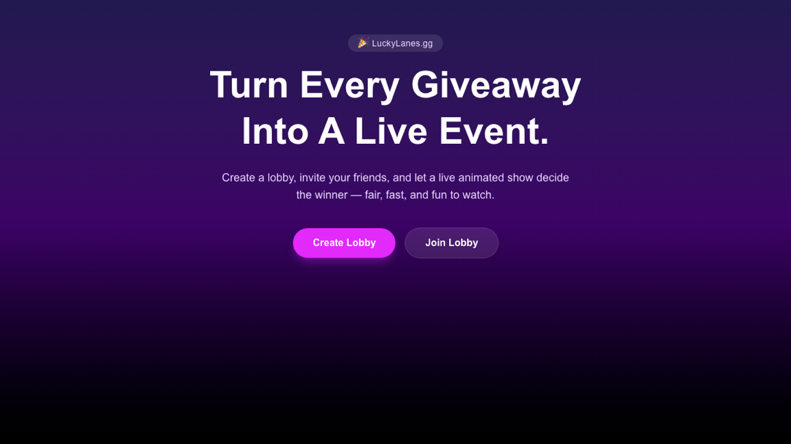

LuckyLanes
Live · Next.js + NestJS/Socket.IOA real-time multiplayer lobby game: players create or join a room, chat while everyone gets ready, then watch a live countdown resolve into a winner reveal. Frontend is Next.js on Netlify; backend is a NestJS + Socket.IO service on Render, backed by Postgres.

What it does
- Create or join a room — a shareable lobby code, no account required.
- Live lobby chat and ready-up — everyone in the room sees the same state update in real time over a Socket.IO connection.
- Countdown → winner reveal — once the room is ready, a synced countdown resolves into a single winner shown to every connected player at once.
Under the hood
The full flow — create, join, chat, ready-up, countdown, winner reveal — runs against the live Render/Postgres backend, not a mock. Because the game state is shared over a live socket connection, it's meant to be tried with a second tab or a friend's device open to the same room code.
This is a real multiplayer service with a live database — be considerate with room creation, and expect it to behave like the shared production environment it is.